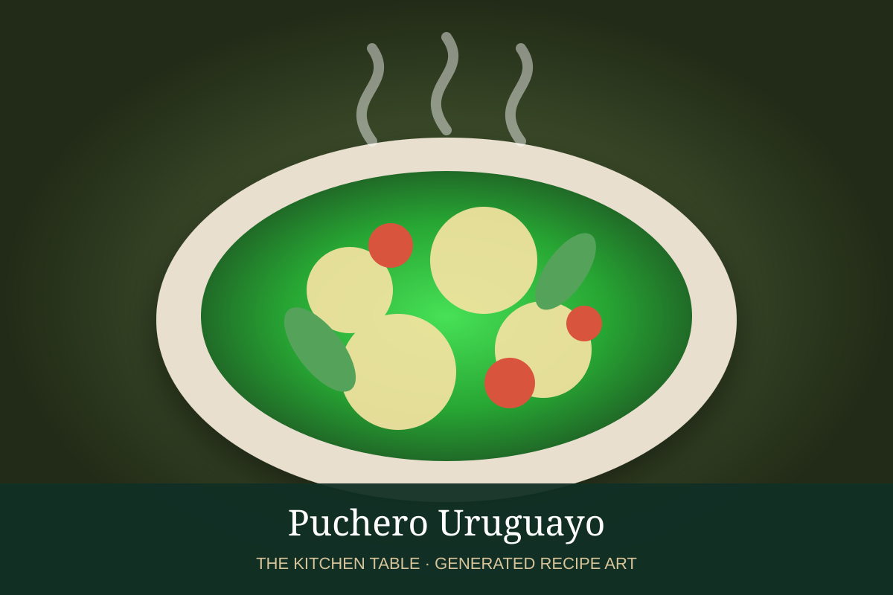

← Back to all recipes
STEW · URUGUAYAN
Puchero Uruguayo
A comforting Uruguayan boiled dinner of beef, vegetables, corn, chickpeas, and a rich savory broth.
2 hrServes 6

Photo: La Manchega
Ingredients
- 2 lb beef shank, brisket, or short ribs
- 8 cups water
- 1 onion, halved
- 2 carrots, cut into large pieces
- 3 potatoes, peeled and halved
- 2 ears corn, cut into pieces
- 2 cups pumpkin or squash, cut into chunks
- 1/2 small cabbage, cut into wedges
- 1 can chickpeas, drained
- 1 bay leaf
- Salt and black pepper
- Chopped parsley, for serving
Preparation
- Place the beef in a large pot and cover with the water. Bring slowly to a simmer, skimming any foam that rises.
- Add onion, bay leaf, and a generous pinch of salt. Simmer gently for about 1 hour.
- Add carrots, potatoes, corn, and pumpkin. Continue cooking until the vegetables are nearly tender, about 25 minutes.
- Add cabbage and chickpeas and simmer another 15 to 20 minutes.
- Season the broth to taste with salt and pepper.
- Serve the meat and vegetables in wide bowls with plenty of broth and chopped parsley.